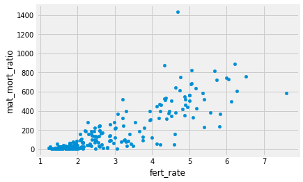
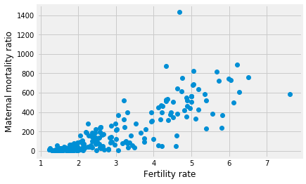
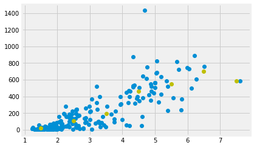
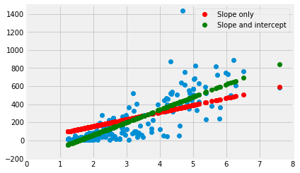
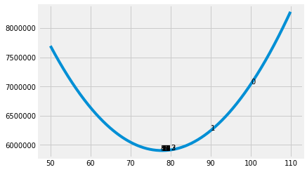
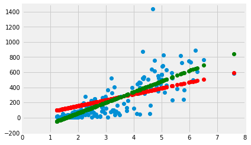

8.5 Finding lines
In The Mean as Predictor, we found that the mean had some good properties as a single best predictor for a whole distribution.
- The mean gives a total prediction error of zero. Put otherwise, on average, your prediction error is zero.
- The mean gives the lowest squared error. Put otherwise, the mean gives the lowest average squared difference from the observed value.
Now we can consider what predictor we should use when predicting one set of values, from a different set of values.
We load our usual libraries.
import numpy as np
import matplotlib.pyplot as plt
%matplotlib inline
# Make plots look a little bit more fancy
plt.style.use('fivethirtyeight')
# Print to 2 decimal places, show tiny values as 0
np.set_printoptions(precision=2, suppress=True)
import pandas as pd
Again, we use the gender data that we first saw in the data frame introduction.
# Load the data file
gender_data = pd.read_csv('gender_stats.csv')
We have already seen the data for the Maternal Mortality Ration mat_mort_ratio.
gender_data['mat_mort_ratio'].hist()
<matplotlib.axes._subplots.AxesSubplot at 0x11627ab70>

gender_data.columns
Index(['country', 'fert_rate', 'gdp', 'health_exp_per_cap', 'health_exp_pub',
'prim_ed_girls', 'mat_mort_ratio', 'population'],
dtype='object')
gender_data.plot.scatter('fert_rate', 'mat_mort_ratio')
<matplotlib.axes._subplots.AxesSubplot at 0x118404a90>

just_fert_mmr = gender_data[['mat_mort_ratio', 'fert_rate']]
just_fert_mmr
| mat_mort_ratio | fert_rate | |
|---|---|---|
| 0 | 444.00 | 4.954500 |
| 1 | 29.25 | 1.769250 |
| 2 | 142.50 | 2.866000 |
| 3 | NaN | NaN |
| 4 | NaN | NaN |
| 5 | 501.25 | 6.123000 |
| 6 | NaN | 2.082000 |
| 7 | 161.00 | 3.397587 |
| 8 | 53.75 | 2.328000 |
| 9 | 27.25 | 1.545500 |
| 10 | NaN | 1.663250 |
| 11 | 6.00 | 1.861500 |
| 12 | 4.00 | 1.455000 |
| 13 | 25.25 | 1.980000 |
| 14 | 81.50 | 1.877250 |
| 15 | 15.25 | 2.065250 |
| 16 | 194.75 | 2.193250 |
| 17 | 28.00 | 1.792250 |
| 18 | 4.00 | 1.677000 |
| 19 | 7.00 | 1.755000 |
| 20 | 29.25 | 2.594750 |
| 21 | 417.50 | 4.806750 |
| 22 | NaN | 1.617500 |
| 23 | 161.75 | 2.061250 |
| 24 | 218.25 | 2.995250 |
| 25 | 11.75 | 1.267000 |
| 26 | 138.75 | 2.845000 |
| 27 | 49.50 | 1.795250 |
| 28 | NaN | NaN |
| 29 | 23.75 | 1.884000 |
| ... | ... | ... |
| 233 | 62.00 | 2.967750 |
| 234 | 33.25 | 3.495750 |
| 235 | 429.50 | 5.181250 |
| 236 | 21.00 | 1.516750 |
| 237 | 240.25 | 5.797750 |
| 238 | 380.75 | 4.620000 |
| 239 | 129.25 | 3.745750 |
| 240 | 63.25 | 1.782750 |
| 241 | 63.25 | 2.140000 |
| 242 | 17.50 | 2.078000 |
| 243 | 43.50 | 2.313750 |
| 244 | NaN | NaN |
| 245 | NaN | NaN |
| 246 | 366.50 | 5.822500 |
| 247 | 24.25 | 1.510250 |
| 248 | 6.00 | 1.793000 |
| 249 | 9.25 | 1.842500 |
| 250 | 14.00 | 1.860875 |
| 251 | 43.25 | 1.795244 |
| 252 | 15.50 | 2.027000 |
| 253 | 37.00 | 2.372750 |
| 254 | 82.50 | 3.364750 |
| 255 | 97.00 | 2.378250 |
| 256 | 54.75 | 1.959500 |
| 257 | NaN | 1.760000 |
| 258 | 47.50 | 4.208000 |
| 259 | 223.75 | 2.464282 |
| 260 | 399.75 | 4.225750 |
| 261 | 233.75 | 5.394250 |
| 262 | 398.00 | 3.943000 |
263 rows × 2 columns
clean_mmr_fert = just_fert_mmr.dropna()
clean_mmr_fert
| mat_mort_ratio | fert_rate | |
|---|---|---|
| 0 | 444.00 | 4.954500 |
| 1 | 29.25 | 1.769250 |
| 2 | 142.50 | 2.866000 |
| 5 | 501.25 | 6.123000 |
| 7 | 161.00 | 3.397587 |
| 8 | 53.75 | 2.328000 |
| 9 | 27.25 | 1.545500 |
| 11 | 6.00 | 1.861500 |
| 12 | 4.00 | 1.455000 |
| 13 | 25.25 | 1.980000 |
| 14 | 81.50 | 1.877250 |
| 15 | 15.25 | 2.065250 |
| 16 | 194.75 | 2.193250 |
| 17 | 28.00 | 1.792250 |
| 18 | 4.00 | 1.677000 |
| 19 | 7.00 | 1.755000 |
| 20 | 29.25 | 2.594750 |
| 21 | 417.50 | 4.806750 |
| 23 | 161.75 | 2.061250 |
| 24 | 218.25 | 2.995250 |
| 25 | 11.75 | 1.267000 |
| 26 | 138.75 | 2.845000 |
| 27 | 49.50 | 1.795250 |
| 29 | 23.75 | 1.884000 |
| 30 | 10.75 | 1.510000 |
| 31 | 384.25 | 5.564500 |
| 32 | 747.25 | 5.992250 |
| 33 | 45.00 | 2.321500 |
| 34 | 169.75 | 2.663000 |
| 35 | 614.00 | 4.743500 |
| ... | ... | ... |
| 230 | 400.50 | 3.302000 |
| 231 | 4.00 | 1.890000 |
| 232 | 5.25 | 1.530000 |
| 233 | 62.00 | 2.967750 |
| 234 | 33.25 | 3.495750 |
| 235 | 429.50 | 5.181250 |
| 236 | 21.00 | 1.516750 |
| 237 | 240.25 | 5.797750 |
| 238 | 380.75 | 4.620000 |
| 239 | 129.25 | 3.745750 |
| 240 | 63.25 | 1.782750 |
| 241 | 63.25 | 2.140000 |
| 242 | 17.50 | 2.078000 |
| 243 | 43.50 | 2.313750 |
| 246 | 366.50 | 5.822500 |
| 247 | 24.25 | 1.510250 |
| 248 | 6.00 | 1.793000 |
| 249 | 9.25 | 1.842500 |
| 250 | 14.00 | 1.860875 |
| 251 | 43.25 | 1.795244 |
| 252 | 15.50 | 2.027000 |
| 253 | 37.00 | 2.372750 |
| 254 | 82.50 | 3.364750 |
| 255 | 97.00 | 2.378250 |
| 256 | 54.75 | 1.959500 |
| 258 | 47.50 | 4.208000 |
| 259 | 223.75 | 2.464282 |
| 260 | 399.75 | 4.225750 |
| 261 | 233.75 | 5.394250 |
| 262 | 398.00 | 3.943000 |
229 rows × 2 columns
clean_mmr_fert.describe()
| mat_mort_ratio | fert_rate | |
|---|---|---|
| count | 229.000000 | 229.000000 |
| mean | 181.431223 | 2.864952 |
| std | 233.134334 | 1.382586 |
| min | 3.000000 | 1.232000 |
| 25% | 16.250000 | 1.782750 |
| 50% | 70.750000 | 2.375250 |
| 75% | 280.000000 | 3.932750 |
| max | 1435.000000 | 7.607750 |
mmr = np.array(clean_mmr_fert['mat_mort_ratio'])
fert = np.array(clean_mmr_fert['fert_rate'])
plt.plot(fert, mmr, 'o')
plt.xlabel('Fertility rate')
plt.ylabel('Maternal mortality ratio')
Text(0, 0.5, 'Maternal mortality ratio')

plt.plot(fert, mmr, 'o')
plt.plot(2, 1000, 'go')
[<matplotlib.lines.Line2D at 0x1185d5080>]
plt.plot(fert, mmr, 'o')
plt.plot([2, 3], [1000, 1200], 'go')
[<matplotlib.lines.Line2D at 0x1186a9ef0>]

fert_bin_centers = np.arange(7) + 1.5
n_bins = len(fert_bin_centers)
fert_bin_centers
array([1.5, 2.5, 3.5, 4.5, 5.5, 6.5, 7.5])
plt.plot(fert, mmr, 'o')
plt.plot(fert_bin_centers, np.zeros(n_bins), 'go')
plt.xlabel('Fertility rate')
plt.ylabel('Maternal mortality ratio')
Text(0, 0.5, 'Maternal mortality ratio')

mmr_means = np.zeros(n_bins)
for i in np.arange(n_bins):
mid = fert_bin_centers[i]
we_want = (fert >= mid - 0.5) & (fert < mid + 0.5)
mmr_means[i] = np.mean(mmr[we_want])
mmr_means
array([ 21.84, 106.97, 194.23, 461.48, 548.55, 698.35, 585.5 ])
plt.plot(fert, mmr, 'o')
plt.plot(fert_bin_centers, mmr_means, 'yo')
[<matplotlib.lines.Line2D at 0x11883a780>]

slope = 100
center_predicted = slope * fert_bin_centers
plt.plot(fert, mmr, 'o')
plt.plot(fert_bin_centers, center_predicted, 'o', color='red')
[<matplotlib.lines.Line2D at 0x118916d68>]

predicted = fert * slope
plt.plot(fert, mmr, 'o')
plt.plot(fert, predicted, 'o', color='red')
[<matplotlib.lines.Line2D at 0x1189daf98>]

error = fert - predicted
error[:10]
array([-490.5 , -175.16, -283.73, -606.18, -336.36, -230.47, -153. ,
-184.29, -144.04, -196.02])
plt.plot(fert, mmr, 'o')
plt.plot(fert, predicted, 'ro')
for i in np.arange(len(fert)):
x = fert[i]
y_0 = predicted[i]
y_1 = mmr[i]
plt.plot([x, x], [y_0, y_1], ':', color='black', linewidth=1)

def sos_error(slope, x, y):
fitted = x * slope
error = y - fitted
return np.sum(error ** 2)
sos_error(100, fert, mmr)
7038632.75610837
sos_error(200, fert, mmr)
40456091.81253432
some_slopes = np.arange(50, 110, 0.1)
n_slopes = len(some_slopes)
sos_errors = np.zeros(n_slopes)
for i in np.arange(n_slopes):
slope = some_slopes[i]
sos_errors[i] = sos_error(slope, fert, mmr)
sos_errors[:10]
array([7695798.57, 7682930.13, 7670107.99, 7657332.17, 7644602.66,
7631919.45, 7619282.56, 7606691.97, 7594147.7 , 7581649.73])
plt.plot(some_slopes, sos_errors)
[<matplotlib.lines.Line2D at 0x118dbda20>]

np.min(sos_errors)
5901409.5805078605
i_of_min = np.argmin(sos_errors)
i_of_min
278
sos_errors[i_of_min]
5901409.5805078605
best_slope = some_slopes[i_of_min]
best_slope
77.8000000000004
best_predicted = fert * best_slope
plt.plot(fert, mmr, 'o')
plt.plot(fert, best_predicted, 'ro')
for i in np.arange(len(fert)):
x = fert[i]
y_0 = best_predicted[i]
y_1 = mmr[i]
plt.plot([x, x], [y_0, y_1], ':', color='black', linewidth=1)

from scipy.optimize import minimize
result = minimize(sos_error, 100, (fert, mmr))
result.x
array([77.84])
from scipy.optimize import fmin
result = fmin(sos_error, 100, (fert, mmr))
result
Optimization terminated successfully.
Current function value: 5901406.206275
Iterations: 20
Function evaluations: 40
array([77.84])
result
array([77.84])
final, tried = fmin(sos_error, 100, (fert, mmr), retall=True)
final
Optimization terminated successfully.
Current function value: 5901406.206275
Iterations: 20
Function evaluations: 40
array([77.84])
tried
[array([100.]),
array([90.]),
array([80.]),
array([80.]),
array([77.5]),
array([77.5]),
array([78.12]),
array([77.81]),
array([77.81]),
array([77.81]),
array([77.85]),
array([77.83]),
array([77.84]),
array([77.84]),
array([77.84]),
array([77.84]),
array([77.84]),
array([77.84]),
array([77.84]),
array([77.84])]
plt.plot(some_slopes, sos_errors)
for i in np.arange(len(tried)):
x = tried[i]
y = sos_error(x, fert, mmr)
plt.text(x, y, str(i))

plt.plot(fert, mmr, 'o')
plt.axis([0, 8, -200, 1500])
[0, 8, -200, 1500]

best_error = sos_error(best_slope, fert, mmr)
best_error
5901409.5805078605
def sos_si_error(inter_slope, x, y):
intercept = inter_slope[0]
slope = inter_slope[1]
fitted = intercept + x * slope
error = y - fitted
return np.sum(error ** 2)
sos_si_error([0, best_slope], fert, mmr)
5901409.5805078605
sos_si_error([-100, 100], fert, mmr)
4516702.759643463
si_predicted = -100 + fert * 100
plt.plot(fert, mmr, 'o')
plt.plot(fert, best_predicted, 'o', color='red')
plt.plot(fert, si_predicted, 'o', color='green')
plt.axis([0, 8, -200, 1500])
[0, 8, -200, 1500]

some_intercepts = np.arange(-300, 50)
n_intercepts = len(some_intercepts)
some_slopes = np.arange(0, 200)
n_slopes = len(some_slopes)
errors = np.zeros((n_intercepts, n_slopes))
for inter_i in np.arange(n_intercepts):
inter = some_intercepts[inter_i]
for slope_i in np.arange(n_slopes):
s = some_slopes[slope_i]
errors[inter_i, slope_i] = sos_si_error([inter, s], fert, mmr)
plt.imshow(np.sqrt(errors))
plt.colorbar()
<matplotlib.colorbar.Colorbar at 0x120d31390>

min_error = np.min(errors)
min_error
3798981.48102873
rows, cols = np.where(errors == min_error)
rows, cols
(array([80]), array([140]))
best_intercept = some_intercepts[rows]
best_intercept
array([-220])
best_si_slope = some_slopes[cols]
best_si_slope
array([140])
si_predicted = best_intercept + fert * best_si_slope
plt.plot(fert, mmr, 'o')
plt.plot(fert, best_predicted, 'o', color='red')
plt.plot(fert, si_predicted, 'o', color='green')
plt.axis([0, 8, -200, 1500])
[0, 8, -200, 1500]

minimize(sos_si_error, [0, 0], (fert, mmr))
fun: 3798879.4982325537
hess_inv: array([[ 0., -0.],
[-0., 0.]])
jac: array([-0.03, -0.06])
message: 'Desired error not necessarily achieved due to precision loss.'
nfev: 69
nit: 7
njev: 17
status: 2
success: False
x: array([-220.86, 140.42])
from scipy.stats import linregress
linregress(fert, mmr)
LinregressResult(slope=140.4171171547987, intercept=-220.8570729056681, rvalue=0.8327335391716736, pvalue=3.3173289077823836e-60, stderr=6.196624287694138)